Ф06 · Форматы стрелки · F полноэкран · N заметки · ? справка
Форматы и сжатие
Ф06 · Форматы
Формат и сжатие
Алгоритмы
Методы
Форматы
Расширения
Кодеки
Контейнеры
Стандарты
Форматы файлов
Графический формат — это способ записи графической информации
От него зависит размер файла и возможности редактирования
Форматы файлов
Способ хранения информации в файле:
Растровый
Векторный
Смешаный
Двухмерный
Трехмерный
Форма хранения информации
Алгоритм сжатия
Форматы файлов
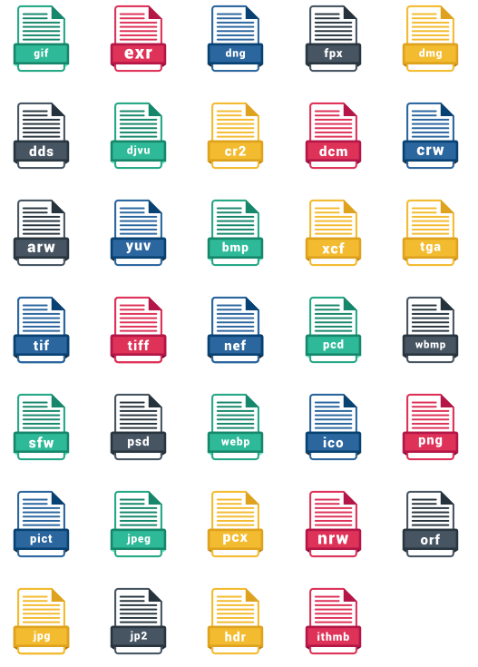
BMP – bitmap picture
Заголовок
Информация о изображении
Изображение
RGB 1-8 бит на канал
Сжатие RLE
Нет прозрачности
Формат Microsoft
GIF - Graphics Interchange Format
8 бит/pxl
Сжатие LZW
1 значение прозрачности
Анимация
Применение:
текст
схемы
картинки и анимация веб
прозрачный
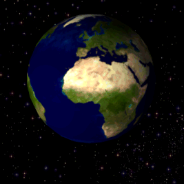
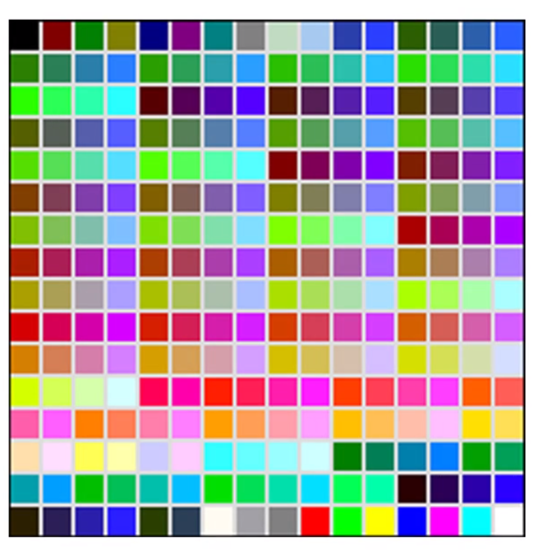
JPEG - Joint Photographic Experts Group
Сжатие JPEG и lossless JPEG
Цветовые модели
До 32 бит/пиксель
Нет прозрачности
Метаданные
Применение:
Фотографии для просмотра
Цветная графика в web
.jpg, .jfif, .jpe, .jpeg.
JPEG - Joint Photographic Experts Group
Сжатие JPEG и lossless JPEG
Цветовые модели
До 32 бит/пиксель
Нет прозрачности
Метаданные
Применение:
Фотографии для просмотра
Цветная графика в web
.jpg, .jfif, .jpe, .jpeg.
…лучшее сжатие и прозрачность, но отсутствие поддержки
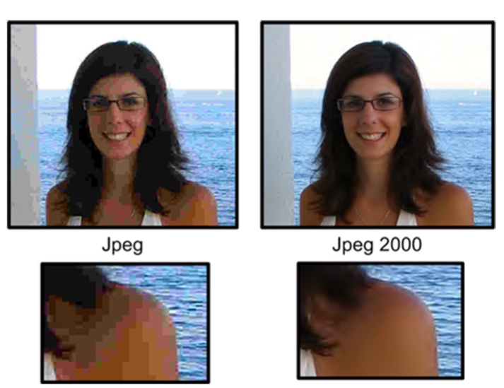
PNG - Portable Network Graphics
lossless Deflate
Цветовые модели
До 32 бит/канал
Канал прозрачности
Метаданные
Служебная разметка
Применение:
Фотографии для просмотра
Цветная графика в web
.png
… а еще есть анимация apng и mng
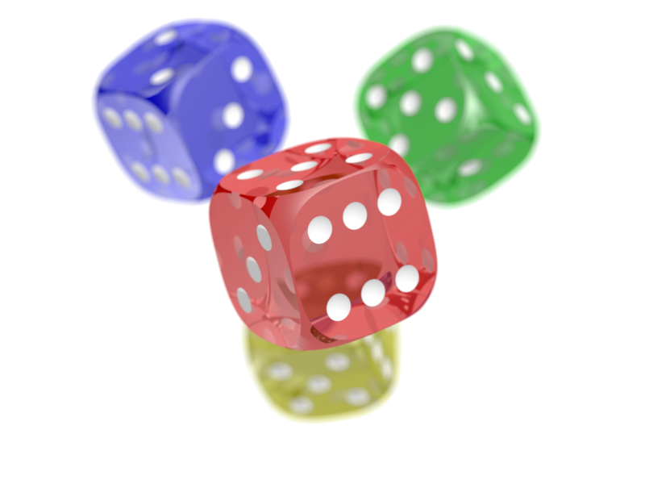
TIFF-Tagged Image File Format
Цветовые модели
Цветовые профили
Многослойная прозрачность (маски)
Метаданные
Служебная разметка
алгоритмы сжатия:
lossless RLE, LZW
JPEG
ZIP
LZ77, JBIG, CCITT Group 3, CCITT Group 4
Применение:
Полиграфия
Факсы
.tif
GeoTIFF by NASA
Вид картографической проекции
Система географических координат
Параметры (датум) земного геоида
Дискреты разрешения изображения
Матрицу полиномиального, сплайнового или аффинного преобразования
Характерные параметры изображения
.tif
Метаданные
производитель камеры
модель
выдержка
диафрагма
светочувствительность в ед. ISO
использование вспышки
разрешение кадра
фокусное расстояние
размер матрицы
эквивалентное фокусное расстояние
дата и время съёмки
ориентация камеры (вертикально/горизонтально)
тип баланса белого
географические координаты и адрес места съёмки
Цифровые негативы/сырые данные/RAW
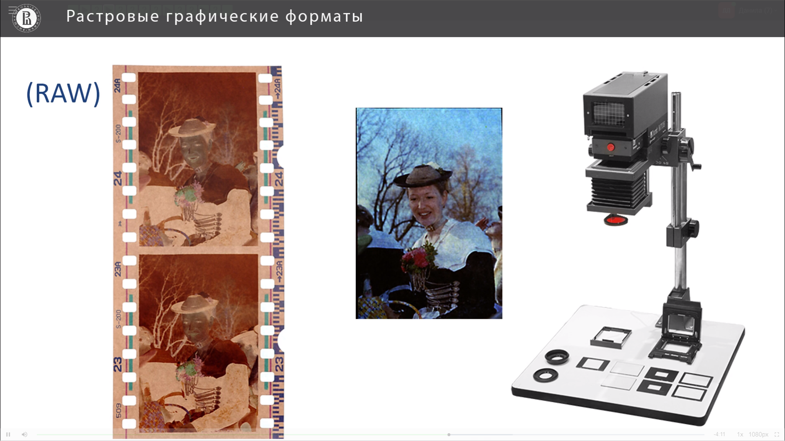
RAW – это не формат файла
Из-за технических особенностей матриц и АЦП разных производителей всеобщего стандарта RAW не существует
DNG (Digital Negative Specification) - открытый формат для Raw-файлов изображений, используемый в цифровой фотографии. Попытка компании Adobe стандартизировать брендовый хаос.
Особенности RAW
Нельзя работать напрямую, без интерпретации
Камера не устанавливает:
ББ
Смещение экспозиции
Параметры экспозиции и цвета
Резкость и шумоподавление
Изображения не сжаты
Бо́льшая широта экспозиционных ступеней
тем не менее сигнал оцифрован, то есть прошел этапы дискретизации и квантования в АЦП
PSD - Photoshop Document
Рабочий формат Adobe Photoshop
Поддержка:
слоев и масок
Текста
Вектора
3D
Видео
SVG - Scalable Vector Graphics
Основной векторный формат в web
Поддерживает анимацию
Отслеживает события на странице
Открытый
Текстовый (XML)
Много весит (есть сжатый SVGZ – zip)
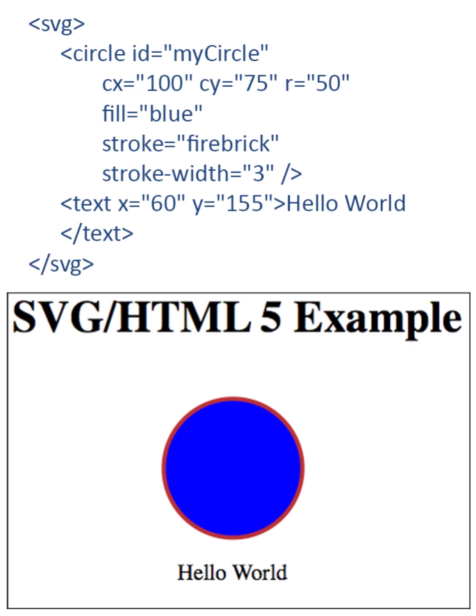
Кратко о векторах
PS PostScript
EPS Encapsulated PostScript
WMF Windows Metafile
PDF - Portable Document Format
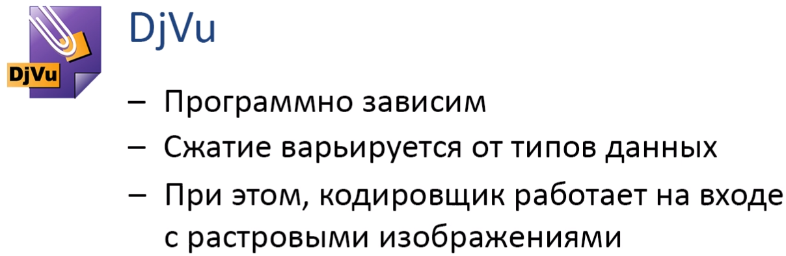
Более полный перечень:
https://fileinfo.com/filetypes/vector_image
https://fileinfo.com/filetypes/raster_image
Формат и сжатие
Алгоритмы
Методы
Форматы
Расширения
Кодеки
Контейнеры
Стандарты
Сжатие (компрессия)
Кодирование
Алгоритмы и методы
алгоритмы
методы
набор инструкций, который в конечное число шагов приводит к преобразованию исходного кода цифрового изображения в код меньшего объёма за счёт устранения избыточности
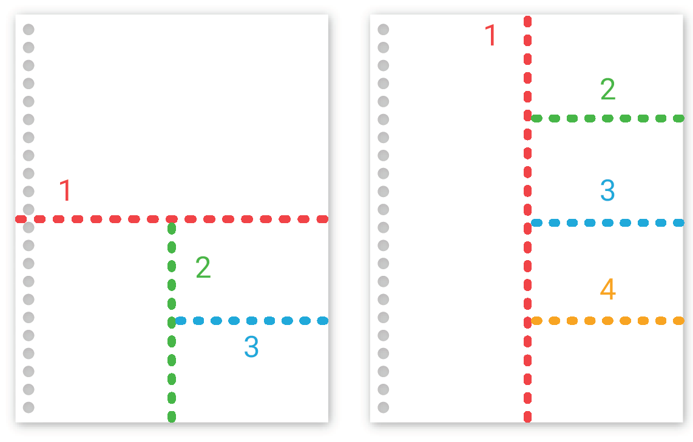
Кодирование
представление информации в виде кода
Код – это конечная последовательность битов
Длина кода – это количество битов в нём.
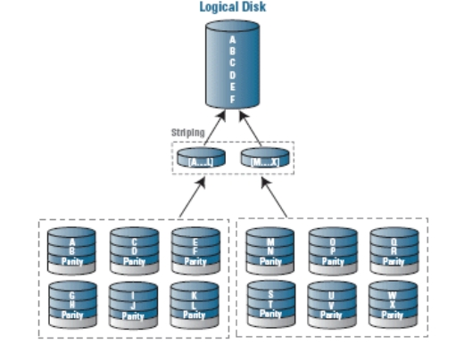
Формат файла
- структура(порядок) данных, записанных в этом файле. Файл – это просто ограниченная область памяти с определенным именем и атрибутами.
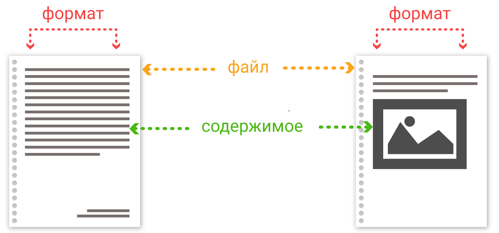
Расширение файла
- это дополнительные символы к имени файла, записываются через точку. Это простой способ объяснить всем программам, какого формата данный файл.
PDF – Portable Document Format (lossless or lossy compression)
PNG – Portable Network Graphics
TIFF – Tagged Image File Format (lossless or lossy compression)
TGA – Truevision TGA
WebP – (lossless or lossy compression of RGB and RGBA images)
FLIF – Free Lossless Image Format
Недеструктивное/lossless
RLE run-length encoding
Кодирование длин серий или кодирование повторов - алгоритм сжатия данных, заменяющий повторяющиеся символы (серии) на один символ и число его повторов
10 x
Недеструктивное/lossless
BMP, TGA, TIFF
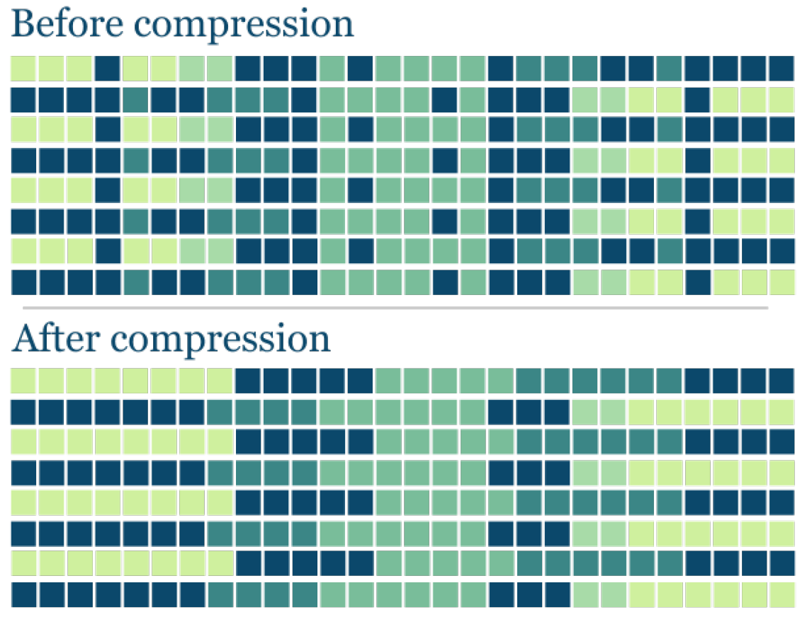
LZW - алгоритм Лемпеля-Зива-Велча (LZ77-78)
«abacabadabacabae»
«0 1 0 2 5 0 3 9 8 6 4»
«a b a c ab a d aba ca ba e»
Не требует вычисления вероятностей встречаемости символов или кодов.
Для декомпрессии не надо сохранять таблицу строк в файл для распаковки. Алгоритм построен таким образом, что мы в состоянии восстановить таблицу строк, пользуясь только потоком кодов.
Данный тип компрессии не вносит искажений в исходный графический файл, и подходит для сжатия растровых данных любого типа.
Алгоритм не проводит анализ входных данных поэтому не оптимален.
Не более 256 значений!
Анимация – разница с предыдущим кадром
Этот алгоритм воспринимался как математическая абстракция до 1984
замена символов новыми символами, основываясь на частоте их использования (алгоритм Хаффмана).
Открытый
До 16 бит/канал
Нет CMYK
Alpha канал 8 бит
Метаданные
PNG, MNG, and TIFF
Недеструктивное/lossless
Сжимает между строк!
FLIF (Free Lossless Image Format)
использует арифметическое кодирование, один из алгоритмов энтропийного сжатия
Коэффициент сжатия выше других существующих
Недеструктивное/lossless
достаточно низкая скорость кодирования
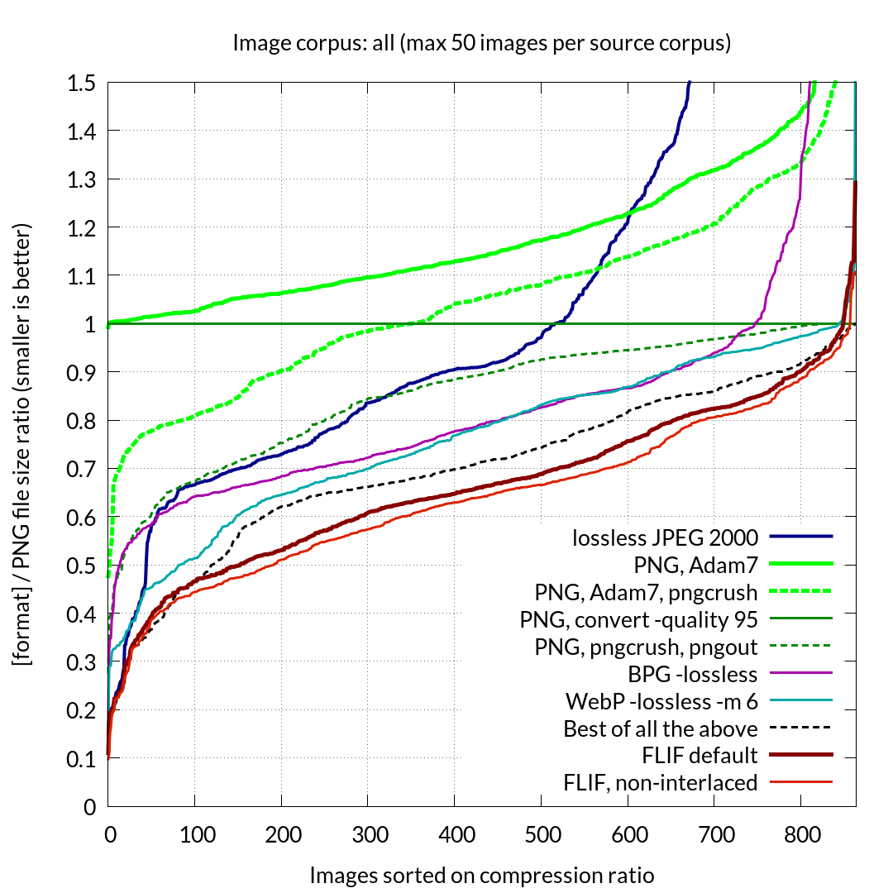
Изначально:
ориентировочно сжимают в 1.5-4 раза
JPEG lossy сжатие
Перевод RGB в YCbCr
Субдискретизация
Дискретное косинусное преобразование
Квантование
Линейный вид
RLE
Алгоритм Хаффмана
Деструктивное/lossy
Цветовая субдискретизация
технология кодирования изображений со снижением цветового разрешения, при которой частота выборки цветоразностных сигналов может быть меньше частоты выборки яркостного сигнала.
Сжатые изображения Y'CbCr 4: 2: 2 требуют двух третей исходного 4: 4: 4 R'G'B ' .
При этом зритель почти не видит визуальных различий.
Дискретное косинусное преобразование и дискретизация
низкая частота – информация
высокая частота - шум
Квантование
деление матрицы коэффициентов на матрицу квантования (матрицу весов)
Именно на этом этапе можно управлять степенью сжатия и определять, что именно будет сжато
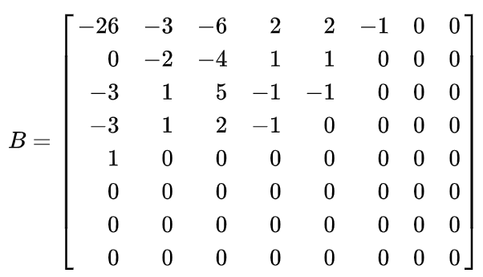
Квантование
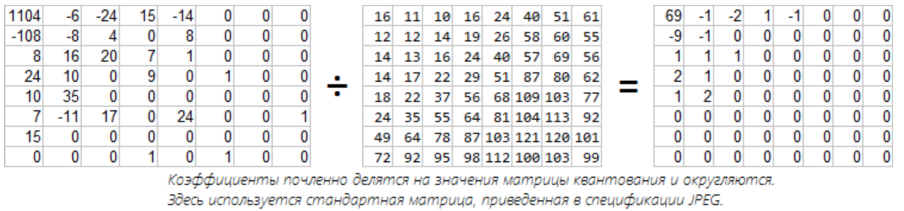
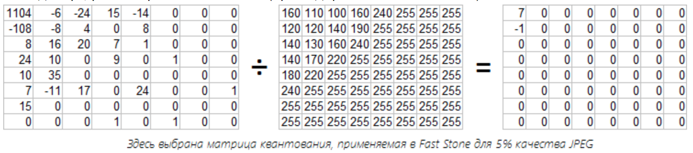
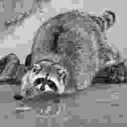
Линейный вид
Преобразование матрицы в строку
По диагонали, начиная с верхнего левого угла – соответствует росту частоты коэфиициентов
RLE
замена повторяющихся символов на один символ и число его повторов
WWOOOOOKRRRRR - W2O5K1R4
Дельта-кодирование
каждый байт содержит отличие от какого-то значения, а не абсолютную величину
12 13 14 14 14 13 13 14 - 12 1 1 0 0 -1 0 1
Алгоритм Хаффмана
часто используемым значениям присваиваются короткие коды, а редко встречающимся – длинные
ABBAAABA – 01100010
ABC – 001100 (одного бита уже не хватает)
ABC – 0100 («сжали»)
А – 0
B – 1
А – 00
B – 01
C – 10
А – 0
B – 1
C – 00
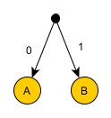
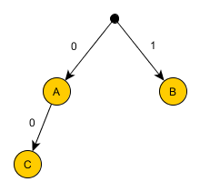
Алгоритм Хаффмана
AAAAAABC – 000000100
AAAAAABC – 0000001011
AAAAAABC - 0000000000000110
А – 0
B – 1
C – 00
А – 0
B – 10
C – 11
А – 00
B – 01
C – 10
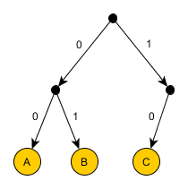
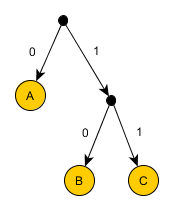
Алгоритм Хаффмана
Необходимо проанализировать весь документ
Больше итераций – выше степень сжатия
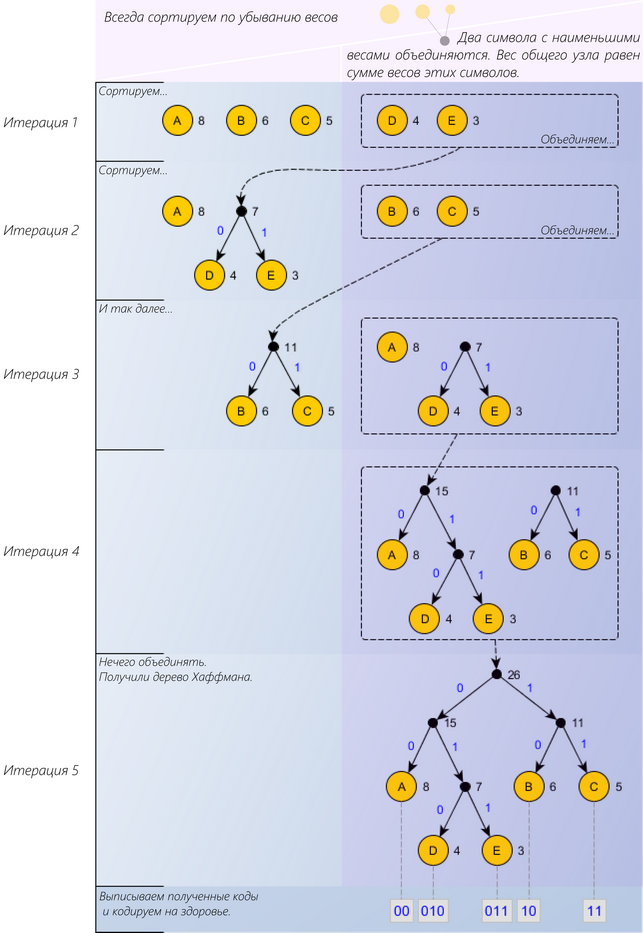
Про это самое:
https://habr.com/ru/post/206264/
https://habr.com/ru/post/454944/
Вейвлет и фрактальное сжатие
Нет дробления на блоки (эффекта Гиббса)
Постепенное декодирование (удобно передавать по сети)
Наличие миниатюры изображения
Регулируемая степень сжатия (от двух до двухсот раз)
Артефакты на контурах объектов
Использование в JPEG2000
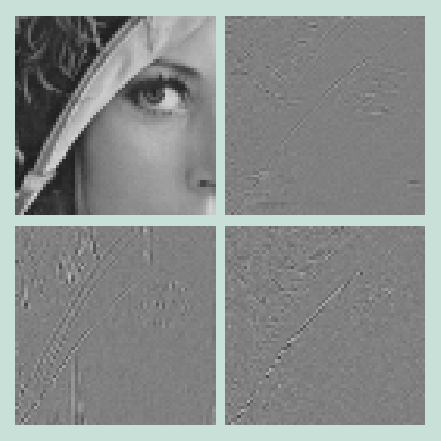
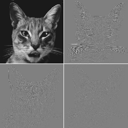
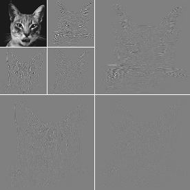
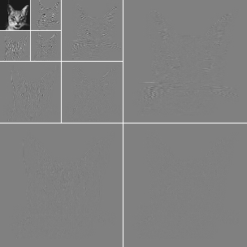
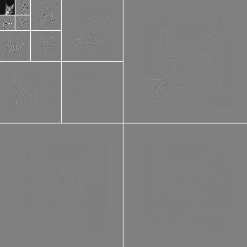
Фрактальное сжатие
Оптимален для сжатия самоподобных изображений
Коэффициент сжатия до 20 000 раз
Сжимает лучше обычных алгоритмов
Крайне медленное кодирование
Декодирует быстрее, чем JPEG
Избегает пикселизации при маштабировании
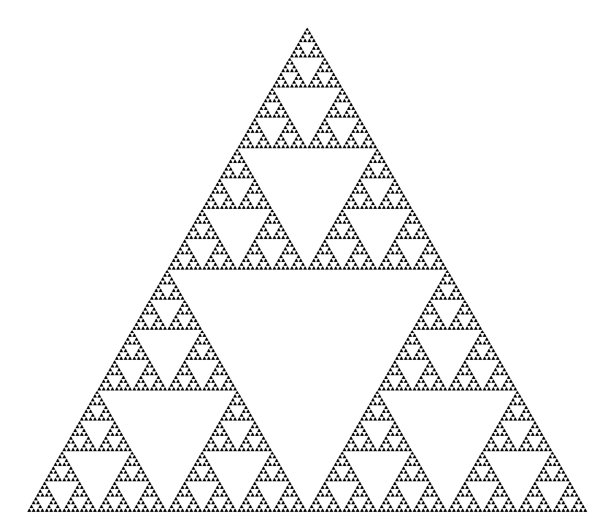
Даты релизов:
TIFF 1986
BMP 1987
GIF 1987-1989
JPEG 1991
JPEG2000 2000
PNG 1996
WEBP 2010
BPG 2014
FLIF 2015
Недостатки JPEG
Блочная структура изображения (8*8)
Отсутствие прозрачности
Малый коэффициент сжатия
Прямая последовательность кодирования
JPEG и PJPEG
JPEG и PJPEG
В 2015 году Facebook перешёл на PJPEG и трафик уменьшился на 10%. Они смогли показать изображение хорошего качества на 15% быстрее, чем раньше, оптимизировав воспринимаемое время загрузки, как показано на рисунке выше
Декодирование PJPEG медленнее, чем базового JPEG — иногда втрое медленнее
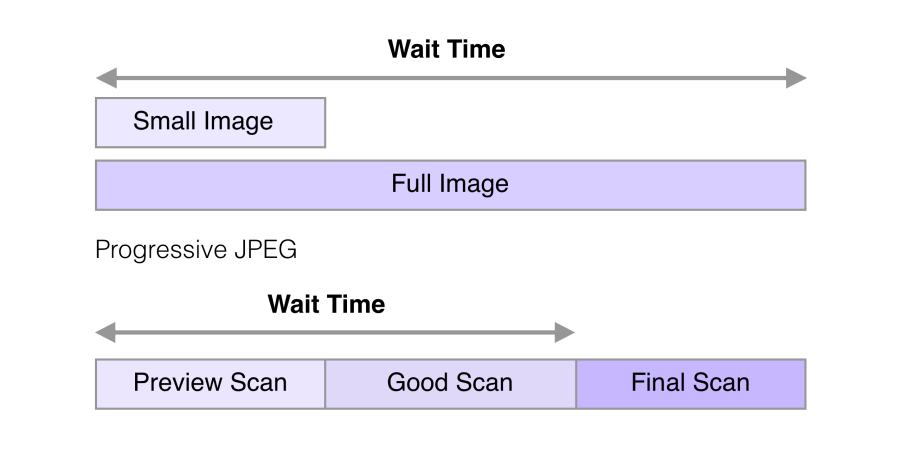
RIFF (WebP)
Согласно данным Google , в среднем изображения WebP на 25-40% меньше, чем сопоставимые JPEG, и на 26% меньше, чем сопоставимые PNG.
Для работы с данным форматом существует открытое программное обеспечение, в частности библиотека libvpx и конвертер webpconv.
Прозрачность
Анимация
Сжатие без потерь
Только 8 bit/канал
YUV 4:2:0
Предсказание блоков!
Google Chrome
Opera
Firefox
Microsoft Edge
Android
BPG
Поддержка в большинстве браузеров, благодаря наличию декодировщика на языке JavaScript. (Размер библиотеки 76 Кб)
Методы кодирования основаны на подмножестве стандарта сжатия видео HEVC/H.265;
Использование идентичных с JPEG форматов цветовой субдискретизации: оттенки серого, YCbCr 4:2:0, 4:2:2, 4:4:4, что позволяет исключить потери при преобразовании из JPEG.
Поддержка слоя прозрачности;
Поддержка от 8 до 14 битов на цветовой канал;
Наличие режима сжатия без потерь.
Поддерка анимации
проблемы с лицензированием
http://xooyoozoo.github.io
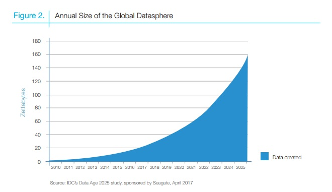
Скорость кодирования/декодирования
Уровень сжатия ~ скорость открытия
Немного о недеструктивном в деструктивном
Большинство Lossy форматов имеет свою Lossless версию
Однако они редко пользуются популярностью и не так хороши